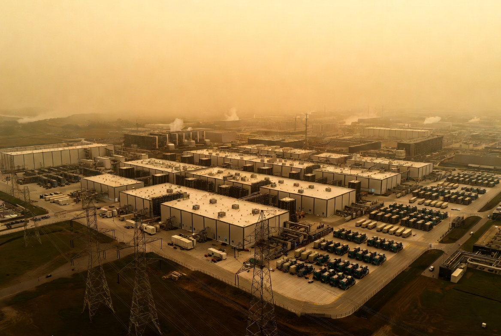
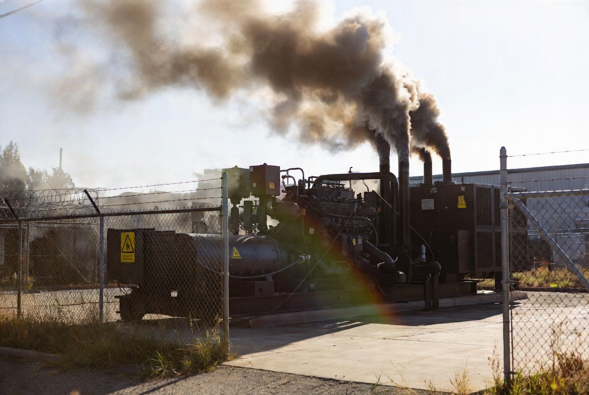
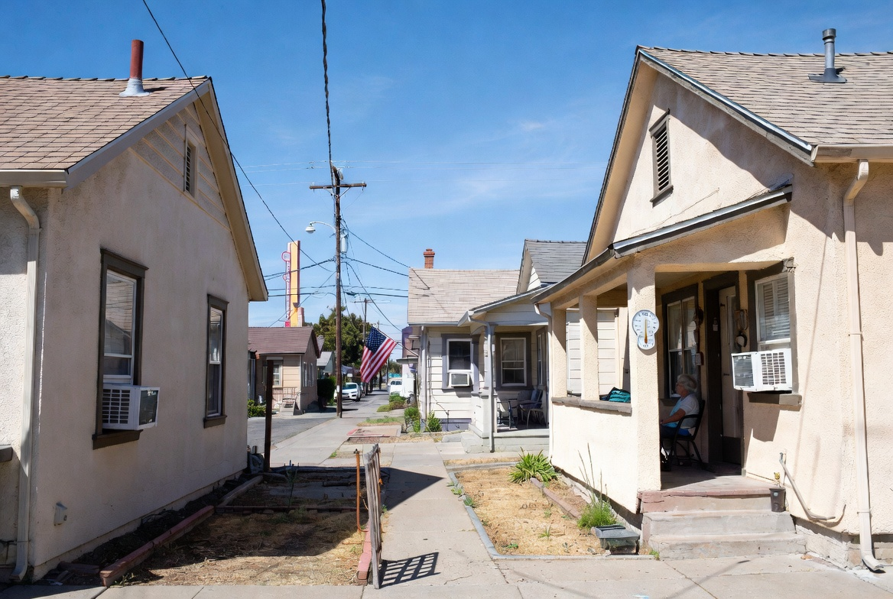
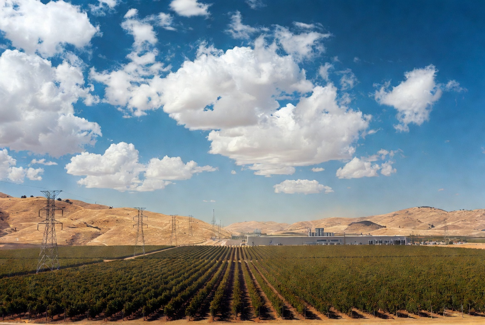
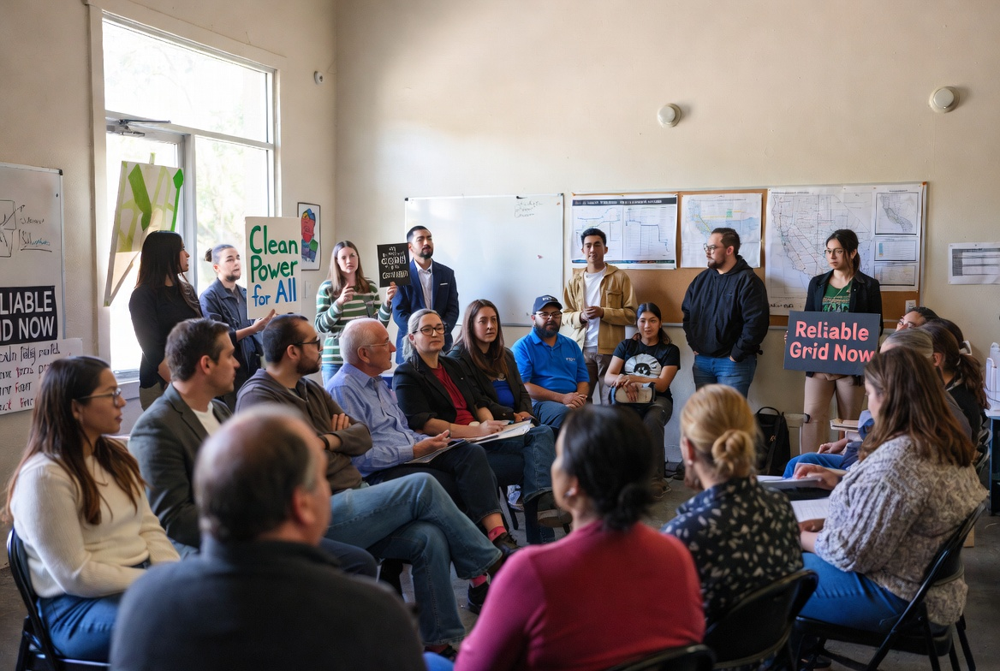

East Coast data center emergency holds urgent lessons for Fresno's Tower District and District 3
On June 30, 2026, U.S. Energy Secretary Chris Wright issued emergency orders under Section 202(c) of the Federal Power Act. The orders authorized PJM Interconnection—the grid operator serving 13 states and Washington, D.C.—to direct large electricity consumers, primarily the dense cluster of AI and cloud data centers in Northern Virginia, to disconnect from the public grid and run on their own backup generators. The directive, reported by CNN's Ella Nilsen on July 2, came as temperatures spiked past 100°F across the eastern United States and demand threatened to break records. While the measure helped keep residential air conditioning running for millions, it exposed a deepening conflict between the explosive growth of AI infrastructure and the reliability, cost, and cleanliness of America's power system. For residents of Fresno's Tower District and South Tower neighborhoods in District 3, these distant events carry immediate local stakes.
The PJM region—home to the world's largest concentration of data centers in Northern Virginia's "Data Center Alley"—faced a perfect storm. A dangerous heat wave pushed the heat index above 100°F from Washington, D.C., to New York. Air conditioning demand surged. At the same time, AI training and inference workloads have driven explosive growth in hyperscale facilities, each consuming tens of megawatts continuously. PJM projected demand could hit 166,304 MW, perilously close to the all-time record of 165,563 MW set in 2006—before significant AI loads existed.
Secretary Wright's order allowed PJM to treat backup generation at large loads (generally sites with 50 MW+ peak demand) as a last-resort resource. Data centers and similar facilities were directed to switch to on-site diesel, natural gas, or battery systems within minutes of an emergency signal, freeing grid capacity for homes and critical services. Hospitals, 911 centers, water treatment, and defense facilities were exempted. The order ran through July 3 and included provisions allowing affected power plants to temporarily exceed normal pollution limits.

Backup generators solved an immediate reliability problem but introduced well-documented downsides. Most industrial standby systems run on diesel or natural gas. These units are typically less efficient than utility-scale plants and emit significantly higher levels of nitrogen oxides (NOx), particulate matter, and other local air pollutants per megawatt-hour generated. The Mid-Atlantic region has limited battery storage compared with Texas or California, leaving grid operators more dependent on fossil-fueled alternatives during sudden spikes.
Environmental and health advocates quickly noted that the emergency measure shifts pollution from centralized, better-controlled plants to neighborhoods near data centers. While the order was temporary, analysts warn that similar interventions could become routine as AI demand continues its steep climb—potentially locking in higher local emissions and noise impacts without broader grid upgrades.

Fresno's summers routinely exceed 100–110°F. In the Tower District and South Tower neighborhoods of District 3, many homes are older bungalows and apartments equipped with window or portable AC units. For seniors, families with young children, and residents with medical needs, reliable power during heat waves is not optional—it is a health necessity. The East Coast precedent raises practical questions: How would similar grid stress play out under CAISO? What happens to local air quality and rates if large new loads arrive in the Central Valley? District 3's mix of historic residential streets, denser south Fresno areas, and proximity to industrial zones makes proactive planning for resilient, clean power especially important.
The events in PJM are not abstract for Central Valley communities. California's grid already manages high summer loads and has invested heavily in renewables and battery storage—advantages the Mid-Atlantic region lacks. Yet the underlying tension is the same: rapid growth in large, always-on electricity users (AI, manufacturing, hydrogen, etc.) can outpace transmission and generation upgrades, creating reliability pressure that ultimately lands on residential ratepayers and vulnerable households.
In District 3, where Councilmember Miguel Arias has represented a diverse coalition including the Tower District, downtown, Chinatown, and southwest Fresno, energy equity intersects with existing priorities around housing, public health, and neighborhood investment. A future in which data centers or other hyperscale facilities seek sites in or near the Valley would bring not only power demand but also water consumption, land use, noise, and potential air quality debates—issues already contentious elsewhere in California.


The DOE order was a pragmatic emergency response, but it underscores the need for longer-term solutions: accelerated deployment of firm clean power (advanced nuclear, geothermal, long-duration storage), aggressive demand-side flexibility programs, and transmission modernization. PJM itself has acknowledged the rapid data center buildout as a driver of reliability challenges. California has tools and policy momentum on storage and renewables, but scaling them fast enough while keeping rates affordable and air clean remains the central test.
For the Tower District and broader District 3, the lesson is clear: community voices must be at the table before crises hit. Whether through participation in CPUC or CAISO proceedings, support for local microgrid and storage pilots, stronger efficiency standards for existing housing stock, or early engagement on any proposed large-load projects, proactive involvement protects the neighborhood character and health that residents have fought to preserve.

The East Coast events are a warning shot. Tower District and District 3 residents can turn awareness into action by focusing on practical resilience: